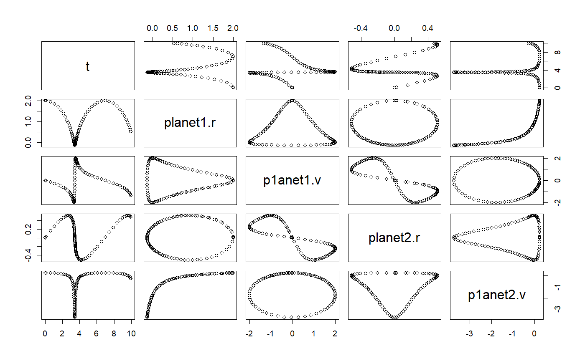

RK45 ODE solver class
RK45 ODE solver class
RK45 class constructor
RK45(ode)
Arguments
| ode | and ODE object |
|---|
Examples
# ++++++++++++++++++++++++++++++++++++++++++++++++ example: ComparisonRK45App.R # Compares the solution by the RK45 ODE solver versus the analytical solution # Example file: ComparisonRK45App.R # ODE Solver: Runge-Kutta 45 # ODE class : RK45 # Base class: ODETest importFromExamples("ODETest.R") ComparisonRK45App <- function(verbose = FALSE) { ode <- new("ODETest") # create an `ODETest` object ode_solver <- RK45(ode) # select the ODE solver ode_solver <- setStepSize(ode_solver, 1) # set the step # Two ways of setting the tolerance # ode_solver <- setTolerance(ode_solver, 1e-8) # set the tolerance setTolerance(ode_solver) <- 1e-8 time <- 0 rowVector <- vector("list") i <- 1 while (time < 50) { rowVector[[i]] <- list(t = getState(ode)[2], s1 = getState(ode)[1], s2 = getState(ode)[2], xs = getExactSolution(ode, time), counts = getRateCounts(ode), time = time ) ode_solver <- step(ode_solver) # advance one step stepSize <- getStepSize(ode_solver) time <- time + stepSize ode <- getODE(ode_solver) # get updated ODE object i <- i + 1 } return(data.table::rbindlist(rowVector)) # a data table with the results } # show solution solution <- ComparisonRK45App() # run the example plot(solution)# +++++++++++++++++++++++++++++++++++++++++++++++++++++++++ example KeplerApp.R # KeplerApp solves an inverse-square law model (Kepler model) using an adaptive # stepsize algorithm. # Application showing two planet orbiting # File in examples: KeplerApp.R importFromExamples("Kepler.R") # source the class Kepler KeplerApp <- function(verbose = FALSE) { # set the orbit into a predefined state. r <- c(2, 0) # orbit radius v <- c(0, 0.25) # velocity dt <- 0.1 planet <- Kepler(r, v) # make up an ODE object solver <- RK45(planet) rowVector <- vector("list") i <- 1 while (getState(planet)[5] <= 10) { rowVector[[i]] <- list(t = planet@state[5], planet1.r = getState(planet)[1], p1anet1.v = getState(planet)[2], planet2.r = getState(planet)[3], p1anet2.v = getState(planet)[4]) solver <- step(solver) planet <- getODE(solver) i <- i + 1 } DT <- data.table::rbindlist(rowVector) return(DT) } solution <- KeplerApp() plot(solution)